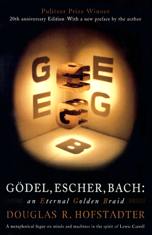

Evaluate the following expressions using Python’s rules of
precedence:
3 + 3 * 3 * 3 + 3 + 3 * 3
10 ** ((9 + 8) % 7) + 6 * (5 + 4 + 3 // 2 + 1)
Precedence Trace #1a
Precedence Trace #1b
Problem 2
Write a Python function
max3(a,b,c)
that returns the largest of its three arguments but does so without
calling any built-in Python functions.
A Buggy First Attempt
defmax3(a, b, c):
"""Returns the largest of the three arguments a, b, and c."""if a > b and a > c:
return a
if b > a and b > c:
return b
if c > a and c > b:
return c
The bug icon indicates that this code is incorrect.
In what cases would this implementation of max3 fail?
Using Nested if Statements
defmax3(a, b, c):
"""Returns the largest of the three arguments a, b, and c."""if a > b:
if a > c:
return a
else:
return c
else:
if b > c:
return b
else:
return c
Using Decomposition
defmax3(a, b, c):
"""Returns the largest of the three arguments a, b, and c."""return max2(a, max2(b, c))
defmax2(a, b):
"""Returns the largest of the two arguments a and b."""if a > b:
return a
else:
return b
Problem 3
As far as I know, the only computer scientist to win a Pulitzer
prize is Douglas Hofstadter, who won one for Gödel,
Escher, Bach, a delightful exploration of the intricacies of
computation.
Hofstadter’s book includes many famous
mathematical puzzles, including this one:
Pick some positive integer and call it n.
If n is even, divide it by two.
If n is odd, multiply it by three and add one.
Continue this process until n is equal to one.
This sequence is usually called the
Hailstone Sequence, because the numbers go up and down before
reaching the end of the process.

Collatz Conjecture
The fascinating thing about this problem is that no one has yet been
able to prove that it always stops.
The conjecture that this process always terminates is called the
Collatz conjecture, and appears in the following XKCD cartoon
by Randall Munroe: